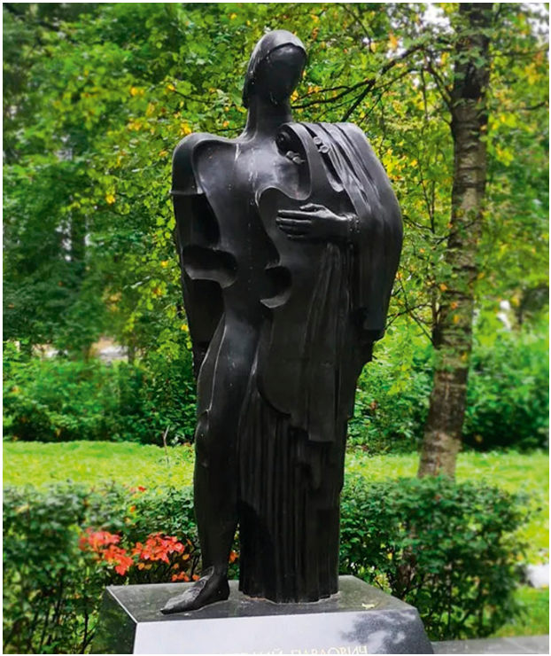
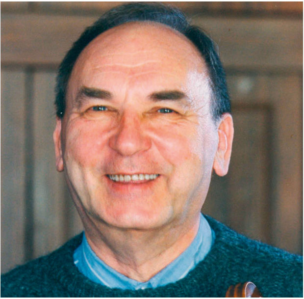
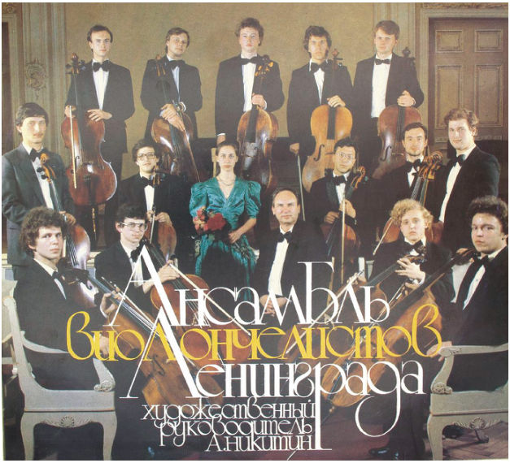
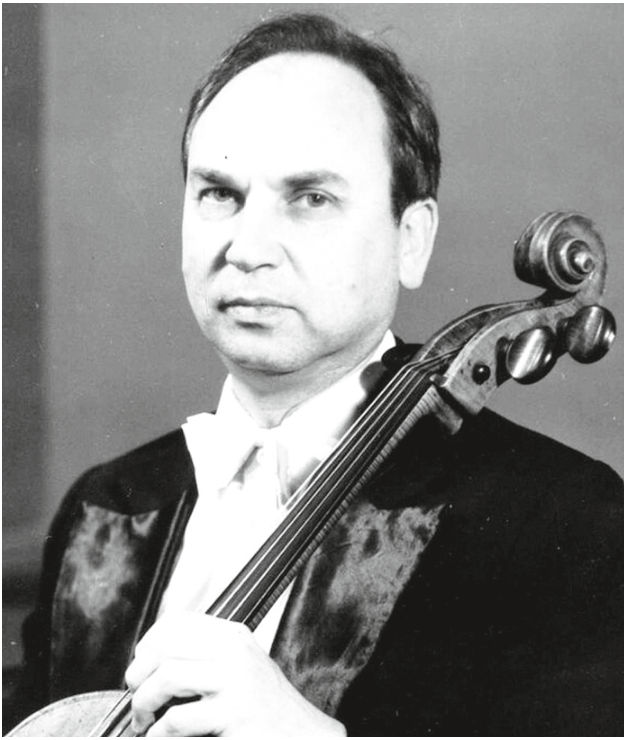
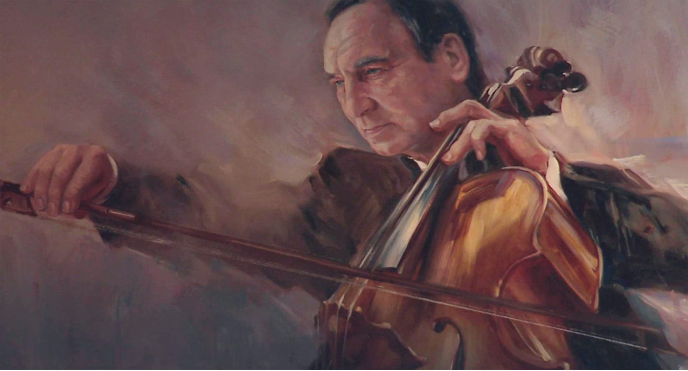

CELLO Легенда · с. 18–22
К 95-летию со дня рождения А.П. Никитина
Солист, концертмейстер, педагог и основатель ансамбля виолончелистов Ленинградской филармонии
2026 год богат на виолончельные юбилеи. Но один из них нам особенно дорог, так как относится к человеку, который не только продолжил славные традиции русской исполнительской школы, но и оставил огромное количество замечательных учеников, которые с большим успехом выступают, преподают, являются крупными общественными деятелями в разных городах России и за рубежом.
Имя Анатолия Павловича Никитина не только «вписано золотыми буквами» в историю отечественного виолончельного искусства, но и принадлежит плеяде выдающихся отечественных музыкантов второй половины ХХ – начала XXI веков.
Блестящий солист, легендарный концертмейстер виолончельной группы в составе Заслуженного коллектива республики оркестра Ленинградской филармонии и крупнейший педагог, ставший главой ленинградской виолончельной школы.
Его многогранный талант, невероятная энергия и глубокие знания позволили создать виолончельную школу высочайшего профессионального мастерства, успехи которой распространились не только по всей нашей стране, но и далеко за её пределами.
Как о великолепном исполнителе о нём отзывались такие крупнейшие отечественные и зарубежные музыканты, как Р. Щедрин, Б. Хайкин, Г. Рождественский, С. Сондецкис, З. Мета и другие. Д.Д. Шостакович говорил об артисте как о «блестящем виолончелисте, превосходном, всесторонне развитом музыканте, выдающемся солисте-концертмейстере, горячем пропагандисте советской музыки».
Анатолий Павлович родился 27 апреля 1931 года. Его родители не были музыкантами, но страстно любили музыку. Будущий виолончелист и его старший брат Глеб (впоследствии флейтист, профессор Ленинградской консерватории) с ранних лет очень тянулись к миру музыки, и первым инструментом, который открыл им этот многообразный мир, стало фортепиано. Таким образом, в специальную музыкальную школу-десятилетку при Ленинградской консерватории юный Анатолий был принят в 1939 году сразу по двум специальностям – на фортепиано и (по настоянию родителей) на виолончель. По окончании школы он поступает в Ленинградскую консерваторию тоже по двум специальностям с одинаково высокими баллами! Но уже на первом курсе выбор был окончательно сделан в пользу виолончели. На четвёртом курсе юный музыкант стал лауреатом международного конкурса на 4-м Всемирном фестивале молодежи и студентов в Бухаресте, за что был награждён премией и именной повышенной государственной стипендией. Первым педагогом виолончелиста был Евгений Владимирович Вольф-Израэль (ученик А. Вержбиловича), который долгое время являлся солистом-концертмейстером Мариинского театра. Позже юноша попал в класс не менее знаменитого Георгия Степановича Михалёва (ученика А.Я. Штримера).
По окончании Ленинградской консерватории А. Никитин поступил в аспирантуру Московской консерватории к М. Ростроповичу.
Ещё будучи студентом, Анатолий Павлович был принят по конкурсу в оркестр Ленинградской филармонии, с которым его судьба будет связана почти полвека. В то время выдающимся коллективом руководил Е. Мравинский, и попасть в этот оркестр было не легче (а может быть, даже и сложнее), чем победить на престижном международном конкурсе.
Другие грани творческой деятельности музыканта (сольное и ансамблевое исполнительство) также ярко проявлялись с самого начала: уже первые концертные выступления виолончелиста привлекали внимание интересными интерпретациями, своеобразием художественной индивидуальности и артистической зрелостью.
Среди выразительных средств, определявших исполнительский стиль артиста, прежде всего впечатляло само качество звука, его тембр, певучесть, тончайший лиризм его кантилены. Мастерское владение инструментом и блестящая виртуозность были целиком направлены на раскрытие художественного образа и позволяли музыканту обращаться к самому разнообразному виолончельному репертуару, который охватывал практически всю виолончельную литературу. От Баха и Вивальди до Прокофьева, Шостаковича, Левитина, Мирзояна – множество произведений было исполнено на разных концертных площадках и записано на пластинки, а запись ансамбля виолончелистов под управлением маэстро и при его участии завоевала призовое место на Всесоюзном конкурсе грамзаписи. Как солист и ансамблист Никитин дал путевку в жизнь целому ряду произведений композиторов-современников, многие из них написаны специально для виолончелиста и ему же посвящены.
Артист считал, что «Кроме вечной классики, через которую проходят все достойные музыканты, солист-концертант должен следить за отечественной и зарубежной современной музыкой и играть её как можно больше. Без этого нет современного исполнителя!»1 В 1960–1970-е годы в репертуаре виолончелиста значительное место заняла камерная музыка. В составе квартета Ленинградской филармонии он сыграл и записал на пластинки целый ряд квартетных произведений XIX–XX веков. Тогда же сложился замечательный ансамбль с пианисткой Фелицией Фондаминской, который за более чем двадцатилетнее существование составил своего рода антологию классической и современной камерной виолончельной музыки.
Анатолий Павлович придавал большое значение камерному музицированию и считал, что оно требует от исполнителя определённой зрелости мысли, большого эмоционально-художественного опыта. Он говорил: «Многие сонаты – это те же симфонии, только написанные для двух инструментов. И если в оркестре музыкантов может объединить твёрдая дирижёрская воля, то в камерном ансамбле 1 Анатолий Никитин, музыкант и педагог: Сборник / Санкт-Петербургская государственная консерватория
им. Н.А. Римского-Корсакова. Составитель и автор комментариев Н. Дегтярёва. СПб.: Глаголъ, 1996. С. 15.


крайне важны чуткая реакция, точное ощущение темброво-звукового баланса, умение слушать партнёра и предугадывать его художественные намерения, способность перевоплощаться из солиста в аккомпаниатора – словом, та ансамблевая культура, которая является необходимой предпосылкой художественно-целостного исполнения. Значение камерного музицирования для исполнителей любых специальностей трудно переоценить. Оно развивает музыканта абсолютно во всех отношениях – углубляет его мышление, расширяет кругозор, обостряет художественную интуицию, воспитывает то драгоценное чувство ансамбля, без которого нет музыканта»2.
Особое место в биографии виолончелиста занимало общение с музыкой Шостаковича. В 1968 году он принимал участие в ленинградской премьере вокально-инструментальной сюиты «Семь стихотворений А. Блока», на которую автор откликнулся весьма тепло и подчеркнул, что «великолепные музыканты превосходно исполнили Сюиту».
А в 1975 году в Малом зале Ленинградской филармонии состоялась премьера альтовой сонаты Шостаковича. Наряду с этим последним сочинением великого композитора по его же замыслу были исполнены скрипичная и виолончельная сонаты (которую Никитин сыграл в ансамбле с Фондаминской).
Исполнительская манера Анатолия Никитина покоряла искренностью и удивительной чистотой стиля, гармонией чувства и интеллекта, а также глубиной интерпретации. Звучание его виолончели отличалось красотой и наполненностью тона, певучей фразировкой, в которой пропевался каждый элемент музыкальной ткани. Музыкант являлся истинным наследником лучших традиций русской виолончельной школы с ее особенной культурой звука, художественной осмысленностью интонации, единством вдохновения и мастерства.
Сам маэстро говорил: «Наиболее важные, на мой взгляд, задачи в воспитании музыканта- исполнителя – это формирование художественно-образного мышления, расширение культуры слуха, способности интонационного охвата произведения. Охватить все стороны музыкального произведения во время одного урока практически невозможно, но урок должен быть построен с акцентом на его музыкальной стороне»3.
Возвращаясь к оркестровой деятельности Никитина, хотелось бы упомянуть о том, что он, в сущности, стал воспитателем группы виолончелей в качестве концертмейстера. В одном из зарубежных отзывов говорилось: «Виолончели – несомненно, лучшая группа оркестра». А великолепные соло концертмейстера неизменно приковывали к себе внимание слушателей. Сам артист признавался, что «порой перед соло в несколь-


ких тактах какого-нибудь симфонического произведения я волнуюсь значительно больше, чем в любом своём сольном концерте. Надо иметь большое самообладание, чтобы после часа напряжённейшей игры несколькими тактами (или даже несколькими нотами!) подвести достойный итог всему исполнению произведения»4. С участием Анатолия Павловича состоялось более 50 премьер произведений для симфонического оркестра.
Работа с выдающимися дирижёрами и солистами, ансамблевая деятельность в струнном квартете и сонатном дуэте и, конечно, сольные выступления стали составляющими уникального «сплава» творческой личности Никитина. Анатолий Павлович называл все эти виды деятельности своими «университетами». Можно предположить, что соотношение разнообразных творческих граней стало и залогом его выдающейся педагогической деятельности. С 1961 года музыкант преподавал в Ленинградской консерватории, а с 1978 года до конца жизни заведовал кафедрой. В классе Анатолия Павловича царила атмосфера коллегиальности, профессионального товарищества. Он объединял своих воспитанников в единый коллектив, творческий организм, где все открыты для сотрудничества и все влияют друг на друга. В этом союзе каждый чувствовал себя окружённым заботой и человеческим теплом, каждый ощущал поддержку.
Его воспитанники играют в лучших оркестрах, преподают в ведущих консерваториях в нашей стране и за рубежом. Им подготовлено целое созвездие талантливых виолончелистов, лауреатов Международных, Всесоюзных, Всероссийских конкурсов, музыкантов, завоевавших мировую известность. Но дело не только в ярких достижениях отдельных воспитанников Никитина – чрезвычайно высоким является общий исполнительский уровень его класса.
Виолончельная педагогика Анатолия Павловича получила широкое международное признание. Он был участником международных семинаров, мастер-классов в различных странах. Среди его выпускников – музыканты из Польши, Венгрии, Австрии, Германии, Англии, Испании, Италии, США, Южной Кореи, Китая…
Большое внимание Анатолий Павлович уделял также и методической деятельности; в течение многих лет в издательствах «Музыка» и «Советский композитор» было выпущено множество переложений, обработок и редакций, сделанных им.
Вполне логичным представляется создание в 1975 году ансамбля виолончелистов, участниками которого явились студенты и выпускники выдающегося педагога. Долгие годы ансамбль вёл активную концертную деятельность у нас в стране и за рубежом, приобрёл широкую известность как

постоянно действующий, стабильный коллектив, обладающий блестящей репутацией и демонстрирующий неизменно высокий уровень исполнительства. Пресса отмечала присущие коллективу «технический блеск и чувство вдохновения», «ощущение единства школы и редкого ансамблевого взаимодействия». В 1980-е годы с ансамблем выступала продолжательница династии – пианистка Ирина Никитина, ныне всем известный продюсер, музыкально-общественный деятель и телеведущая, автор программы «Энигма» на канале «Культура».
Сам факт принадлежности к школе Никитина приобретает особый, знаковый характер, является своеобразным музыкальным «удостоверением личности», гарантией высокого профессионализма. Но за всем этим стоит нечто большее – сопричастность великой традиции русского классического искусства. Великолепная культура звука, культура «пения на виолончели», благородство и одухотворённость интерпретации, романтическая наполненность художественной эмоции – качества, культивируемые ещё школой Давыдова, продолжились в исполнительстве и педагогике Никитина. В современной художественной действительности, представленной бесконечным множеством великих музыкальных имён, тенденций и направлений, петербургская виолончельная школа сохраняет свою самобытность, неповторимое своеобразие, «петербургскую» интонацию…
А закончить рассказ об Анатолии Павловиче Никитине хотелось бы цитатой дирижёра Владислава Чернушенко: «…натура действительно неординарная и сложная, но цельная. Сложность – в многомерности граней своих, в неистовой исступлённости достижения цели, в увлечённостях, привязанностях и душевных отторжениях, в нём в неразделимой одновременности живут: мудрец, искушённый в плаваниях по морю житейскому, и юноша, околдованный однажды пением золотых струн и не утративший с годами свежести восприятия; своеобразный «дядька Черномор», выводящий на концертные ристалища боевую дружину виолончельных витязей, дабы явить миру силу и доблесть музыкальных мужей России; наставник юных – терпеливый, требовательный, непреклонный в постижении ими тайн ремесла, неутомимый вожак молодой ватаги, карабкающейся по каменистой горной тропе к скрытой в облаках вершине мастерства, и сам – послушный ученик, жадно заглатывающий новые и новые знания. Всё в этом явлении по отдельным частям вполне понятно и зримо. А в единстве – остаётся загадкой. Поэтому видно, что подлинный талант – есть тайна. И тогда как бы сама собой возникает краткая формула явления, простая и естественная – Анатолий Павлович Никитин. Божьей милостью музыкант»5.